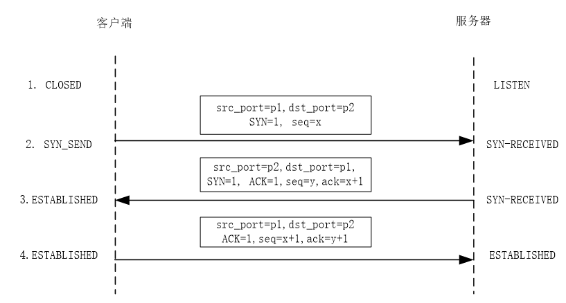
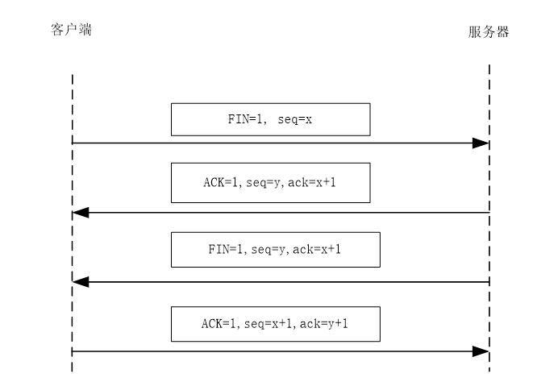

1.运输层的主要功能有
2.TCP/IP 的运输层有两个协议,分别是
3.运输层使用
4.UDP 首部中的源端口代表
5.TCP 首部中的
6.TCP 建立连接的过程称为
1.传输层为应用层提供（C）的逻辑通信。
A.点到点
B.点到多点
2.有关TCP,论述错误的是（A）。
3.有关UDP,论述正确的是（A）。
1. 简述TCP和UDP各自的特点。
UDP只提供应用进程寻址和简单的差错检测功能，它不能向应用层保证数据的可靠性，也不具有流量控制的功能。UDP比较简单，但效率比较高，常常为那些对实时性要求比较高的应用提供服务，如语音传输。
而TCP就要复杂得多，除了应用进程寻址的功能外，TCP还能为应用层提供可靠的数据传输服务，能将数据顺序地、无错地、不丢失地交给正确的应用进程，并具有流量控制和拥塞控制的能力。TCP通常为那些需要数据可靠性的应用提供服务，如文件传输、浏览网页等。
2. TCP/IP的运输层是如何实现应用进程寻址的？如何实现运输层的多路复用的？
TCP/IP使用端口机制来实现应用进程的寻址。不论是TCP还是UDP，在首部中都有源端口和目的端口两个字段。源端口代表发送数据的进程，目的端口代表接收数据的进程。当UDP用户数据报和TCP报文段到达目的主机后，主机上的UDP、TCP会根据首部中目的端口将数据交给正确的应用进程。
3. 图示TCP建立连接的过程和关闭连接的过程。
（1）TCP建立连接过程

（2）TCP关闭连接过程

4. 简述TCP流量控制的原理。
TCP主要使用首部中的窗口字段来进行流量控制。首部中的窗口字段用来将自己目前的接收缓存大小通知对方的TCP，在数据传递过程中，接收缓存会随时变化，TCP在向对方发送确认或发送数据时，都将现在的接收缓存大小写入首部的窗口字段中，发送给对方，对方收到后，所发送数据的大小不会超过窗口字段的值，从而保证了接收方缓存不会溢出，TCP依此实现了流量控制。
5. TCP是如何保证数据传输的可靠性的？
TCP主要采用确认和重传机制来实现数据传输的可靠性。每一方的TCP都要为所传输的数据编号，编号是以字节为单位的。发送字节的起始编号是在建立连接的过程中确定的，并且已经通过三次握手过程告知了对方。
如果收到了编号正确的数据，那么就要给对方发送确认。收到确认后，就可以继续发送后面的数据。发出一个TCP报文段后，就启动一个定时器，如果定时器时间到了但确认还没有来，那么就重传一次这个报文。
如果数据中途丢失，那么发送端会收不到确认，定时器超时就会重传。
如果数据出错，接收端会丢弃这个报文，发送端会同样收不到确认，定时器超时也会重传。
如果确认丢失了，发送方会因为定时器超时而重传报文，这样接收方会收到重复的报文，接收方将直接丢弃重复的报文，并发送确认。
对于乱序到达的TCP报文段，TCP会缓存这些乱序的报文，将其排好序后在上传给应用层。
6. 为什么要进行拥塞控制？TCP是怎样进行拥塞控制的？
当大量的数据涌入网络时，网络中的部分路由器可能会因为过载而被迫丢弃一些分组，产生拥塞。同时，发送方会因为定时器超时重传那些被路由器丢弃的分组，从而引起更严重的拥塞，使整个网络陷入瘫痪。因此，发送端要进行拥塞控制。
TCP认为，如果出现了丢包现象，确认没有及时回来，就发生了拥塞。一个连接两端的TCP都维持一个变量，称为拥塞窗口，用来限制TCP向网络中注入数据的大小和速率。当网络的状况很好，每个确认都能及时回来时，就增大拥塞窗口，增加注入网络的数据；如果产生了拥塞，确认没有及时回来，就主动减小拥塞窗口，以缓解网络的压力。
当刚刚建立TCP连接后，TCP拥塞窗口的大小为最大报文长度MSS。开始阶段每收到一个确认，拥塞窗口大小就增加一个MSS，拥塞窗口的大小是以1，2，4，8，…指数方式递增的，即每经过一个RTT，拥塞窗口的大小就翻倍。这个过程称为慢启动。
当拥塞窗口的值达到一定大时，发送速率就超过了网络的接收能力，这时丢包现象就产生了。一旦发现丢包，TCP就要减小拥塞窗口。如果连续若干个数据包的确认都没有收到，说明网络拥塞状况比较严重，那么TCP迅速将拥塞窗口的大小降为1，并进入慢启动阶段；同时还要设置一个门限值，这个值是发生拥塞时拥塞窗口大小的一半。当慢启动以指数方式增加到这个门限值后，拥塞窗口的增长变为线性增长。此后在一个RTT内不论收到多少确认，只增加一个MSS，直到再次发生丢包。如果TCP收到了连续的几个相同的确认，TCP会将拥塞窗口的大小降为原来的一半，同时拥塞窗口的增加变为线性增长，在一个RTT内，拥塞窗口最多只增加一个MSS，直到再次发生丢包。
7. TCP协议用到了几个定时器，各有什么作用？
（1）保活定时器：在服务器端设置，用来测试一个连接是否有效。在保活定时器时间内，如果收到了客户端的信息，那么定时器就复位，重新计时；如果2小时内没有收到客户端的任何数据，那么服务器TCP就会给客户端TCP发送一个探测报文。如果收到了正确的应答，说明连接有效，计时器就复位，重新计时；否则就关闭这个连接，释放相关的资源。
（2）重传定时器：在发送一个TCP报文后，会启动重传定时器。如果在定时器截止时间之前收到了确认，就撤销这个定时器。如果定时器时间到了，确认还没有收到，就重传该报文并将定时器复位。
（3）坚持定时器：在TCP流量控制中，可能会因为零窗口通告而产生双方死锁的现象。为避免这种现象，在收到了一个零窗口通告后，就启动一个坚持定时器，定时器时间到时就发送一个探测报文。这个报文大小为1字节，接收方收到后要发送确认报文，同时将新的窗口大小通知发送方。